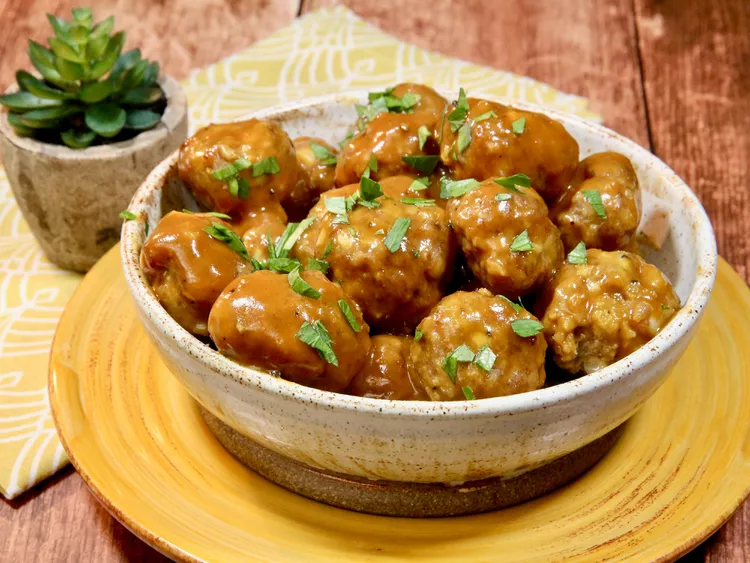

Turkey Meatballs

These turkey meatballs in maple-bourbon mustard sauce are juicy, moist, and made with simple ingredients. Serve as an appetizer or main course with a side of rice or noodles.
Ingredients
- 1 pound ground turkey
- 6 tablespoons panko bread crumbs
- 1 tablespoon Worcestershire sauce
- 3 cloves garlic, minced
Steps
- Preheat the oven to 375 degrees F (190 degrees C). Line a rimmed baking sheet with aluminum foil. Place a baking rack on top, spray the rack with cooking spray, and set aside.
- In a bowl, combine onion, panko, egg, Worcestershire, garlic, salt, and pepper. Add ground turkey, and gently mix together. Use a 1 tablespoon cookie scoop to gently shape into balls without packing too hard; place on the prepared baking rack.
- Bake in the preheated oven until meatballs are cooked through, 15 to 20 minutes. An instant read thermometer inserted near the center should read 160 degrees F (71 degrees C).
- Meanwhile, add mustard, maple syrup, bourbon, tomato paste, salt, pepper, and cayenne to a saucepan, and whisk until well combined. Cook over medium-low heat until sauce starts to thicken, 12 to 15 minutes. Add butter, and stir until melted.